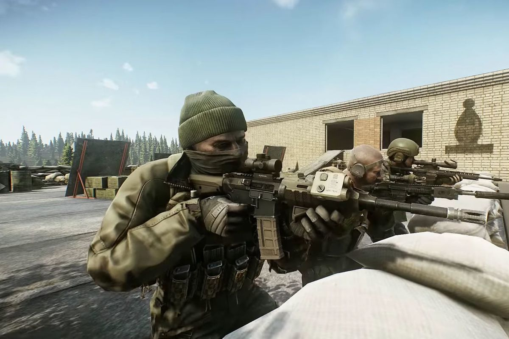
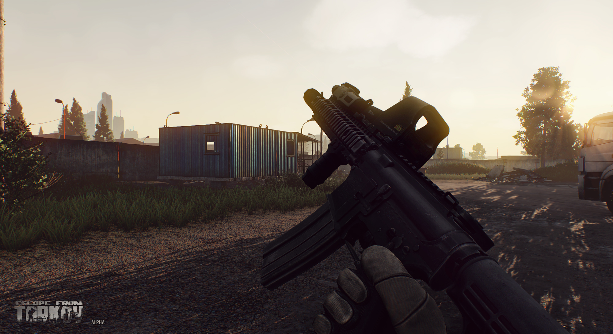

Welcome to EFT Fun page
GET READY FOR ESCAPE

Escape from Tarkov / Побег из Таркова - это хардкорная реалистичная сюжетная многопользовательская онлайн-игра, сочетающая в себе черты жанров FPS / TPS, боевого симулятора и RPG c ММО элементами. С каждым безвозвратно уходящим в прошлое днем ситуация в Норвинской области становится все более и более запутанной. Непрекращающиеся бои на улицах Таркова вызвали массовую панику среди населения, заполнив беженцами ведущие из него дороги. Нашлись, впрочем, среди местных жителей и те, кто решил остаться, увидев в возникшей ситуации возможность поживиться за чужой счет. Приняв новые реалии как данность, неорганизованные одиночки из числа обитателей Таркова - Дикие - стали сбиваться в хорошо вооруженные банды, дерущиеся друг с другом за передел города. Сегодня весь Тарков разграничен невидимыми линиями на зоны влияния различных группировок. В своей жажде наживы вооруженные бандиты не остановятся ни перед чем, их не пугают ни убийства гражданских лиц, ни прямые столкновения с двумя частными военными компаниями. Игрокам предстоит вжиться в роль одного из наемников, переживших начальную стадию Тарковского конфликта. После выбора одной из сторон – USEC или BEAR – персонаж игрока начинает свой нелегкий путь в поисках способа выбраться из города. Выходы из Таркова перекрыты миротворцами ООН и российскими войсками, все линии снабжения отрезаны, а связь с командованием утрачена. В таких условиях каждому приходится самому выбирать, как выжить, что делать, и как выбраться из погрузившегося в пучину хаоса мегаполиса.
События Escape from Tarkov / Побега из Таркова происходят в вымышленной Норвинской особой экономической зоне, бывшей в пору своего расцвета мостом между Россией и Европой. К несчастью, льготные условия налогообложения и преференции для иностранных инвесторов привлекли к региону внимание не только законопослушных компаний, но и корпорации с более чем сомнительными намерениями. В Таркове, одном из крупнейших городов региона, разразился коррупционный скандал, в эпицентре которого оказалась трансатлантическая корпорация. Шесть месяцев спустя, политическое противостояние вылилось в открытые вооруженные столкновения на улицах города между миротворцами ООН, внутренними войсками МВД и двумя частными военными компаниями. Границы области были вскоре заблокированы, отрезая от внешнего мира тех, кто попал в ловушку разгорающегося локального конфликта.